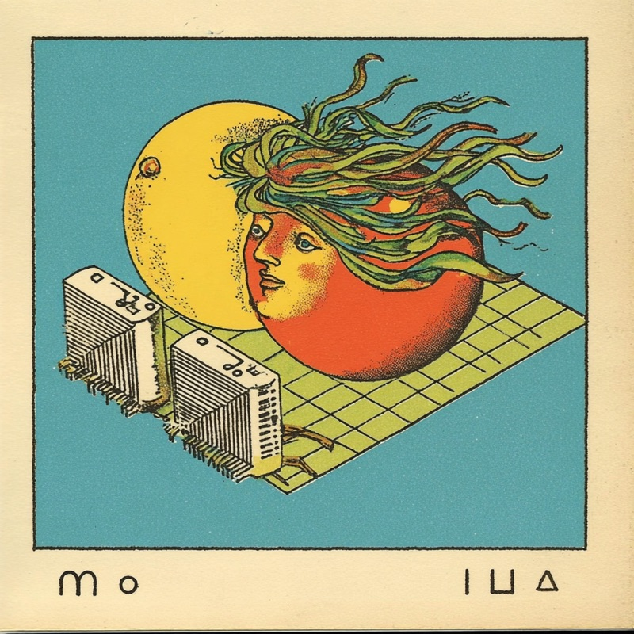
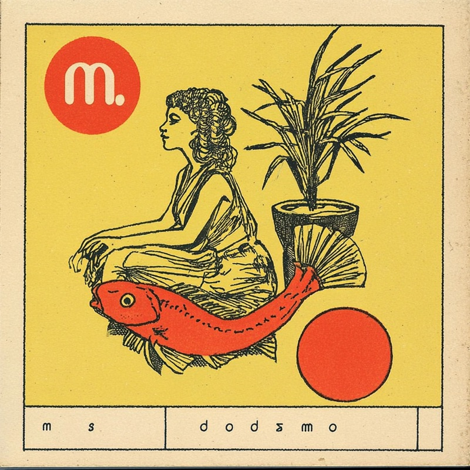
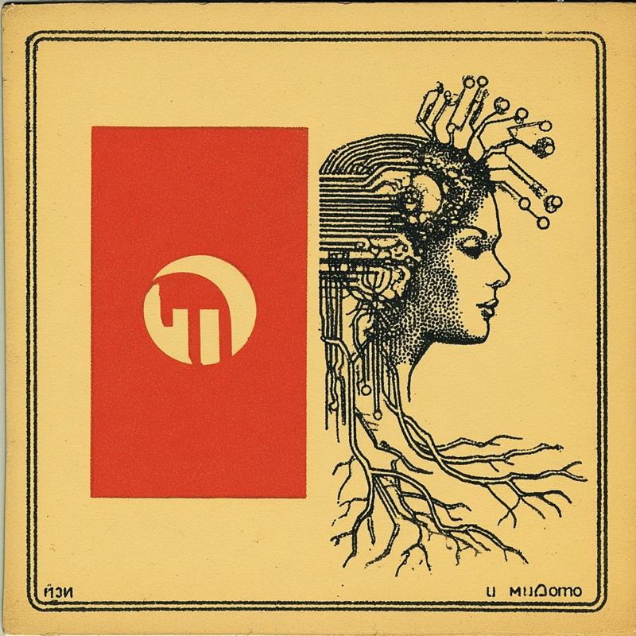

Mondo Times is my bi-weekly newsletter on Substack. Want to check out the goods before subscribing? Browse some recent issues — it's all free.

Mexican Institute of Sound, Meridian Brothers, Alvarius B. and Ibrahim Alfa Jnr, plus notes from Primavera Sound.

New material from Paradise Metal, Peki Momés and Zoh Amba, with fresh playlists and mixes.

Yara Asmar and Joshua Idehen, plus festival coverage and mixes from electronic producers.
My monthly Spotify and Apple Music playlist, always freshly piqued.
Long-form radio shows and video mixes — Ghost World Transmissions and other detours.
Fourth volume in the Ghost World series. Two hours of spectral grooves, library obscurities and hypnotic detours — music from the margins that never made it to any algorithm.
I casually DJ/select sometimes.
I've recently made online all my past blogging since 2005.
Browse 4,769 posts from 16 years of music curation.